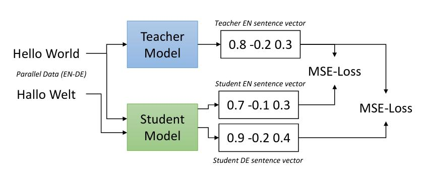

Sentence transformers are a useful class of models that make it easier to implement efficient textual search applications. In this article we explain how KBLab’s Swedish Sentence-BERT was trained, providing some motivations on the methods used and the training process.
The published model can be found on Huggingface via the following link: https://huggingface.co/KBLab/sentence-bert-swedish-cased .
Meaningful sentence embeddings
Pre-trained transformer language models trained at scale on large amounts of data have shown great success when fine-tuned on tasks such as text classification, named entity recognition and question answering. They can in fact also be successfully fine-tuned to compare the similarity between two sentences. However, when trained on semantic textual similarity (STS) tasks, these models typically require that two sentences be passed together as one input sequence to the network. This convention of passing sentence pairs as single input sequences is also present in the pre-training of said models, where one of the network’s pre-training tasks commonly includes “next sentence prediction” .
While this convention produces strong results because the model can draw and combine information from both sentences in solving a task, it unfortunately also leads to practical issues when a particular dataset does not come nicely arranged in the form of sentence pairs, but rather instead as an unordered set of sentences. Finding the top \(k\) most similar sentences in a set of \(N\) sentences requires \(\sum^N_{i=1} i = \frac{N \cdot (N-1)}{2}\) similarity computations (Reimers and Gurevych 2019). In the case of BERT, every single one of these computations come with an additional overhead – since in order to obtain a similarity score one must first pass every sentence pair through the neural network. A BERT base model consists of \(110\) million parameters. These parameters are all involved in the transformation of the input to obtain a single similarity score.
A list of 2000 sentences requires almost 1 million similarity computations.

Reimers and Gurevych (2019) estimated it would take approximately 65 hours to perform the required 50 million similarity inference computations for a set of 10000 sentences with a V100 GPU. As an alternative they proposed Sentence-BERT, which they gave the moniker a “bi-encoder” . In the training process each sentence was passed independently to the model. The resulting sentence embeddings u and v were then used for different down stream tasks such as classification. Trained in this manner, BERT models are successfully able to produce meaningful semantic sentence embeddings for single sentences.
Once the embeddings are obtained, we can perform the \(\frac{N \cdot (N-1)}{2}\) similarity computations using only the embeddings and consequently avoid the overhead of involving the neural network in each of the computations. In this scenario we only need \(N\) inference passes through the network to obtain sentence embeddings for every sentence. As a result our inference time can be reduced from 65 hours to mere seconds.
Swedish training data?
An ever-present concern when training Swedish language models tends to be the lack of training data for fine-tuning. The situation is no different in the area of semantic textual similarity, where training data is plentiful in English, but sorely lacking in Swedish. Below is an example of data sources used to train many of the English sentence transformers models in the sentence-transformers package 2 . The evaluation dataset most often used is STSb: the Semantic Textual Similarity benchmark (Cer et al. 2017). A subset of the STSb’s test set was translated into Swedish and included as part of SuperLim (Adesam, Berdicevskis, and Morger 2020) under the name of SweParaphrase.
| Name | Source | #Sentence-Pairs | STSb-dev |
|---|---|---|---|
| AllNLI.tsv.gz | SNLI + MultiNLI | 277,230 | 86.54 |
| sentence-compression.tsv.gz | sentence-compression | 180,000 | 84.36 |
| SimpleWiki.tsv.gz | SimpleWiki | 102,225 | 84.26 |
| altlex.tsv.gz | altlex | 112,696 | 83.34 |
| msmarco-triplets.tsv.gz | MS MARCO Passages | 5,028,051 | 83.12 |
| quora_duplicates.tsv.gz | Quora | 103,663 | 82.55 |
| coco_captions-with-guid.tsv.gz | COCO | 828,395 | 82.25 |
| flickr30k_captions-with-guid.tsv.gz | Flickr 30k | 317,695 | 82.04 |
| yahoo_answers_title_question.tsv.gz | Yahoo Answers Dataset | 659,896 | 81.19 |
| S2ORC_citation_pairs.tsv.gz | Semantic Scholar Open Research Corpus | 52,603,982 | 81.02 |
| yahoo_answers_title_answer.tsv.gz | Yahoo Answers Dataset | 1,198,260 | 80.25 |
| stackexchange_duplicate_questions.tsv.gz | Stackexchange | 169,438 | 80.37 |
| yahoo_answers_question_answer.tsv.gz | Yahoo Answers Dataset | 681,164 | 79.88 |
| wiki-atomic-edits.tsv.gz | wiki-atomic-edits | 22,980,185 | 79.58 |
| wiki-split.tsv.gz | wiki-split | 929,944 | 76.59 |
Machine translation
Different ways of getting around the issue of data have been explored. Isbister and Sahlgren (2020) investigated whether simply machine translating the English NLI and STS training datasets to Swedish could yield competitive results. They used KB-BERT (Malmsten, Börjeson, and Haffenden 2020) trained in a cross-encoder setting and found it outperformed all other evaluated options (\(82.5\) Pearson correlation on a machine translated version of STS-b test set). Ultimately the authors still recommended against using their model “due to a high prevalence of translation errors” in the data with unknown effects on downstream applications.
Self-supervised
A second avenue for getting around the lack of training data has been by training completely self-supervised/unsupervised. Carlsson et al. (2021) trained their models on data dumps of Wikipedia. Contrastive tension was used to maximize similarity between identical sentences, and minimize it for differing sentences without any need for labels. Their model however performed somewhat worse for Swedish than other languages (Arabic, English, Russian, Spanish). The Swedish model achieved \(61.69\) Pearson correlation on the machine translated version of the STS-b test set created by Isbister and Sahlgren (2020) .
While the results are encouraging, at this point there still existed a gap that had yet to be closed when compared to the best performing English models.
Data: Parallel corpus training data
One approach to training a model is through distilling the knowledge of a “teacher” model to a student model. In this scenario where we want our student model to emulate the embeddings of a teacher model trained in another language, we need to make use of parallel (translated) data.
We have data in the form of one sentence from the source language (English) and one sentence from the target language (Swedish). An example of the first 100 sentences of the English-Swedish Europarl dataset can be found here.
The OPUS (Open Parallel Corpus) project (Tiedemann 2012) has made available a great collection of parallel corpora from the web from a diverse set of sources. We use a number of different data sources to ensure our translated parallel sentences cover a wide range of language. Below is a table of the number of total sentences from each dataset used in the training of our model. Each English and Swedish sentence is counted uniquely. The reason some datasets have an odd number of sentences, is because in rare occasions two (or more) different candidate translations may be attached to the same sentence. We filter out all sentences above 600 characters in length. Furthermore, single sentences without a suggested candidate translation or source sentence are not included in training.
The question of dataset bias may naturally arise as a result of our selection. However, it should be noted that we – in our training – are merely recreating and matching the knowledge of the original model. The training process is not meant to impart “new knowledge” to our student model. Biases in our datasets are unlikely to be reflected in any substantial manner in the final model. Rather the final model will reflect the biases already present in the teacher model.
Here is a short description of each dataset:
- OpenSubtitles 18: Sourced from opensubtitles.org, a large database of movie and TV subtitles (Lison and Tiedemann 2016). Can be filtered by a variable that measures time-overlap of the subtitles. v1 of the model did not filter observations, but a future v2 of the model will be trained on a subset of data with a higher
overlapthreshold. - Europarl: A parallel corpus consisting of proceedings of the European parliament (Tiedemann 2012).
- JW300: Various texts and articles from different Jehovas Witnesses websites and magazines. A filtering variable denoting
certaintyof alignment exists. Filtering will be applied for v2 of the model. - EMEA: Texts from the European Medicines Agency, extracted from PDFs.
- EUbookshop: Based on documents from the EU bookshop. This datasets xml alignment file was found to be corrupt after training the model, causing quality issues in the aligned sentences. Future versions of the model will likely omit this dataset unless the corrupted xml files can be fixed.
- TED2020: Based off of TED and TED-X transcripts from July 2020 (Reimers and Gurevych 2020).
- Tatoeba: Translated sentences from a free collaborative platform for language learners.
Data download scripts can be found on the following links: get_parallel_data_opus.py get_parallel_data_tatoeba.py get_parallel_data_ted2020.py
Dev set validation during training
We split off 1000 sentence pairs each from TED2020 and Tatoeba to form a validation set. The model was validated against these every 1000 training steps. The best model was continually autosaved during training based on the lowest combined MSE (sum) of the student model’s English and Swedish sentence embeddings against the teacher model’s English sentence embedding.
Method: Translating models via knowledge distillation
The method used for KBLab’s Sentence-BERT is described in the paper “Making Monolingual Sentence Embeddings Multilingual using Knowledge Distillation” (Reimers and Gurevych 2020). In short it allows us to take existing sentence embeddings models of the Bi-Encoder type shown in figure @ref(fig:cross) and extend them to new languages. The general setup in our case is as follows:
- A strong pre-trained teacher model of the Bi-Encoder type maps sentences in a source language (English) to dense vectors (embeddings). Our goal is to make a student model learn to match the teacher’s embeddings.
- A student model, which may be of the Cross-Encoder type takes sentence pairs consisting of one sentence from the source language (English) and one sentence from the target language (Swedish). Its objective is to minimize the mean squared error (MSE) between the teacher’s embedding against both the source and target language embeddings generated by the student model. See figure @ref(fig:multilingual).
- The input sentences to the student model are from parallel corpora, meaning they are translations of each other.

Update 2022-04-22: In a previous version of this post the author discussed and alluded to the English-Swedish input sentence pairs being cross-encoded in the student model. However, when training a bi-encoder sentence transformer the sentences from different languages are processed independently by the student model network.
Teacher model
We chose paraphrase-mpnet-base-v2 as our teacher model. At the time of training this was the strongest available bi-encoder. It was trained on Paraphrase Data.
Student model
Our student model was the Swedish pretrained KB-BERT, using the same vocabulary.
Evaluations on SuperLim
SuperLim is a Swedish evaluation suite for natural language understanding models (Adesam, Berdicevskis, and Morger 2020). It was inspired by the English SuperGLUE (Wang et al. 2020).
We chose the four resources most relevant to the tasks our model was trained on:
SweParaphrase: A subset of the English STS benchmark (Cer et al. 2017) dataset translated to Swedish. It consists of 165 sentence pairs. Human evaluators ranked the sentences according to how similar the two sentences were deemed to be (from 0 meaning no meaning overlap, to 5 meaning equivalence). Assembled and translated to Swedish by Isbister and Sahlgren (2020). Update (correction, 2021-09-07): The English STSb was machine translated to Swedish by Isbister and Sahlgren (2020). A subset of 165 sentence pairs from this automatically translated dataset were manually corrected by a native speaker of Swedish as part of the SuperLim project.
Swedish FAQ: A collection of questions and answers from various Swedish authorities websites (Försäkringskassan, Skatteverket, etc). The questions are divided into categories, for example
Förälder :: Barnbidrag :: Vanliga frågor. The task is to match questions within a category to the correct answer (among a set of candidate answers that have been shuffled within the category).SweSAT synonyms: Multiple choice word synonym task of Högskoleprovet (Swedish equivalent to SAT). Test taker is presented with a question word, and needs to match it to the correct option (synonym) from 5 possible choices.
SuperSim: It is not clear whether Sentence embedding models produce meaningful word embeddings. This is a similarity and relatedness test set for word pairs, where each word has been rated on both relatedness and similarity by five different annotators. We only evaluate against the similarity scores.
SweParaphrase results
We compare our results (KB-SBERT) to the previous highest published scores on SweParaphrase reported by Isbister and Sahlgren (2020). Results reported as Correlation coefficient * 100.
Update (article correction, 2021-09-07): Isbister and Sahlgren (2020) evaluated on a machine translated version of the STSb test set. SweParaphrase is a subset of this machine translated version consisting of 165 sentence pairs. The sentence pairs were manually corrected by a native Swedish speaker. The results are therefore not directly comparable.
Code to replicate results: evaluate_sweparaphrase.py
Swedish FAQ results
There’s a varying number of questions per category in this dataset. Randomly guessing or naïvely guessing a single candidate answer within each group would give us an expected accuracy of \(9.55\%\) (average questions per category is \(10.47\)).
KB-SBERT total accuracy: \(50.49\%\).
Replicate results: evaluate_faq.py
KB-SBERT manages to match half of the questions with the correct answer.
SweSAT synonyms
KB-SBERT hasn’t been explicitly trained to generate meaningful embeddings on the word level. However, we are curious to see how the model performs. Randomly guessing a single answer alternative would yield an expected accuracy of \(20\%\).
KB-SBERT accuracy: \(42.82\%\).
Replicate results: evaluate_swesat.py
The model performs better than random, though the result is still quite weak.
SuperSim
Here we predict semantic word similarity between word pairs as opposed to sentence pairs. We compare results with baselines published by Hengchen and Tahmasebi (2021) on the word similarity task.
Replicate results: evaluate_supersim.py
It appears KB-SBERT is not to recommend for word embeddings.
Acknowledgements
We gratefully acknowledge the HPC RIVR consortium (www.hpc-rivr.si) and EuroHPC JU (eurohpc-ju.europa.eu) for funding this research by providing computing resources of the HPC system Vega at the Institute of Information Science (www.izum.si).
Closing words
KB-SBERT appears to perform well on sentence similarity tasks. Training on parallel corpora using a teacher model seemingly leads to better results compared to machine translation. However, it remains to be seen whether the distilled model behaves well when fine-tuned on downstream tasks in Swedish without any English supervision.
If you use KB-SBERT in your work, and perhaps fine-tune it for specific tasks, please drop us a message and tell us how it went. You can find the lab’s e-mail address in the footer of this webpage.
References
Adesam, Yvonne, Aleksandrs Berdicevskis, and Felix Morger. 2020. “SwedishGLUE – Towards a Swedish Test Set for Evaluating Natural Language Understanding Models.”
Carlsson, Fredrik, Evangelina Gogoulou, Erik Ylipää, Amaru Cuba Gyllensten, and Magnus Sahlgren. 2021. Semantic Re-Tuning with Contrastive Tension. International Conference on Learning Representations, ICLR 2021. https://openreview.net/pdf?id=Ov_sMNau-PF.
Cer, Daniel, Mona Diab, Eneko Agirre, Inigo Lopez-Gazpio, and Lucia Specia. 2017. “SemEval-2017 Task 1: Semantic Textual Similarity Multilingual and Crosslingual Focused Evaluation.” Proceedings of the 11th International Workshop on Semantic Evaluation (SemEval-2017). https://doi.org/10.18653/v1/s17-2001.
Hengchen, Simon, and Nina Tahmasebi. 2021. “SuperSim: A Test Set for Word Similarity and Relatedness in Swedish.” In Proceedings of the 23rd Nordic Conference on Computational Linguistics (NoDaLiDa), 268–75. Reykjavik, Iceland (Online): Linköping University Electronic Press, Sweden. https://aclanthology.org/2021.nodalida-main.27.
Isbister, Tim, and Magnus Sahlgren. 2020. “Why Not Simply Translate? A First Swedish Evaluation Benchmark for Semantic Similarity.” https://arxiv.org/abs/2009.03116.
Lison, Pierre, and Jörg Tiedemann. 2016. “OpenSubtitles2016: Extracting Large Parallel Corpora from Movie and TV Subtitles.” In Proceedings of the Tenth International Conference on Language Resources and Evaluation (LREC’16), 923–29. Portorož, Slovenia: European Language Resources Association (ELRA). https://aclanthology.org/L16-1147.
Malmsten, Martin, Love Börjeson, and Chris Haffenden. 2020. “Playing with Words at the National Library of Sweden – Making a Swedish BERT.” https://arxiv.org/abs/2007.01658.
Reimers, Nils, and Iryna Gurevych. 2019. “Sentence-BERT: Sentence Embeddings Using Siamese BERT-Networks.” In Proceedings of the 2019 Conference on Empirical Methods in Natural Language Processing. Association for Computational Linguistics. https://arxiv.org/abs/1908.10084.
———. 2020. “Making Monolingual Sentence Embeddings Multilingual Using Knowledge Distillation.” In Proceedings of the 2020 Conference on Empirical Methods in Natural Language Processing. Association for Computational Linguistics. https://arxiv.org/abs/2004.09813.
Tiedemann, Jörg. 2012. “Parallel Data, Tools and Interfaces in OPUS.” In Proceedings of the Eighth International Conference on Language Resources and Evaluation (LREC’12), edited by Nicoletta Calzolari (Conference Chair), Khalid Choukri, Thierry Declerck, Mehmet Ugur Dogan, Bente Maegaard, Joseph Mariani, Jan Odijk, and Stelios Piperidis. Istanbul, Turkey: European Language Resources Association (ELRA).
Wang, Alex, Yada Pruksachatkun, Nikita Nangia, Amanpreet Singh, Julian Michael, Felix Hill, Omer Levy, and Samuel R. Bowman. 2020. “SuperGLUE: A Stickier Benchmark for General-Purpose Language Understanding Systems.” https://arxiv.org/abs/1905.00537.
Footnotes
Citation
BibTeX citation:
@online{rekathati2021,
author = {Rekathati, Faton},
title = {Introducing a {Swedish} {Sentence} {Transformer}},
date = {2021-08-23},
url = {https://kb-labb.github.io/posts/2021-08-23-a-swedish-sentence-transformer/},
langid = {en}
}
For attribution, please cite this work as:
Rekathati, Faton. 2021. “Introducing a Swedish Sentence
Transformer.” August 23, 2021. https://kb-labb.github.io/posts/2021-08-23-a-swedish-sentence-transformer/.